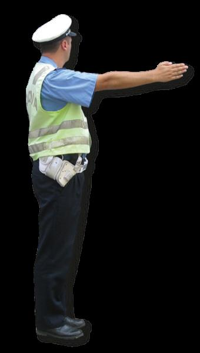

Жесты, свистки, полицейские команды и сопровождаемые колонны.
Команды регулировщика
Ovlašćeno službeno lice / policijski službenik — уполномоченное лицо / полицейский. Когда он регулирует перекрёсток, его указания имеют преимущество перед противоречащими сигналами светофора и другими средствами регулирования. Он даёт знаки руками и положением тела, stop tablicom, световыми и звуковыми устройствами. Снижение скорости, ускорение и остановку может потребовать также из полицейского автомобиля или с мотоцикла при видимом обозначении полиции. 7 · фр. 39–41; банк 10420, 9475–9477.
| Что распознать |
Смысл |
| Обращён грудью или спиной, prsa / leđa |
Со стороны груди и спины движение запрещено; с боковых сторон разрешено в рамках сигнала |
| Руки разведены, затем опущены при той же позиции |
Опускание рук само по себе не меняет смысла положения корпуса |
| Вытянутая вперёд рука, predručena ruka |
Запрещено движение, пересекающее направление этой руки; не «ехать, куда она указывает» |
| Ладонь и грудь обращены к водителю |
Остановиться |
| Горизонтальная рука плавно движется вверх-вниз, ладонь вниз |
Smanji brzinu — снизить скорость |
| Круговое движение предплечьем |
Ubrzaj kretanje — ускорить движение |
| Ладонь вверх, подзывающее движение |
Pomeri vozilo bliže — подвинуть машину ближе к перекрёстку или регулировщику |
Источник: 7 · фр. 40–42. Описания относятся к различным жестам: нельзя смешать поднятую вверх руку, руку вперёд и подзывающее движение. Иллюстраций лекции нет; для проверки конкретной позы используй изображение банка, а не догадку по обрывку «этот знак».
Свисток: важная поправка
Jedan duži zvižduk — один длинный свисток: обратить внимание на полицейского, который даст соответствующий знак. Лектор пересказывает это как «все останавливаемся». Банк B 9479 не считает обязательную остановку значением самого длинного свистка. Остановка может потребоваться следующим жестом. 7 · фр. 42.
Više uzastopnih kratkih zvižduka — несколько коротких: кто-то нарушил поданный сигнал, правило или знак. Посмотреть на полицейского и установить, относится ли требование к тебе (9480–9481). Свисток в сочетании с жестом подаётся, когда полицейский находится вне автомобиля; не только на перекрёстке (9478).
Синие и красно-синие огни
| Ситуация |
Действия по смыслу лекции и банка |
| Vozila pod pratnjom, сопровождение с красно-синими огнями |
Пропустить весь сопровождаемый поток, дать возможность разъезда/обгона/объезда; при необходимости остановиться или освободить проезжую часть; выполнять команды сопровождения; продолжить после всех машин |
| Vozilo sa prvenstvom prolaza, движется с синим спецсигналом |
Обратить внимание, уступить и дать проехать; остановиться/сместиться при необходимости, выполнять команды |
| Машина полиции стоит с синей мигалкой на проезжей части |
Снизить скорость, при необходимости остановиться, выполнять указания полицейского |
Источники: 7 · фр. 42–44; банк 10422–10426. В вопросах различай kreće se — движется и stoji — стоит. Po potrebi — при необходимости: безусловную остановку не подставлять вместо этого условия.
У полицейской машины с дисплеем, presretač, текст STOP POLICIJA, PRATITE NAS, SMANJITE BRZINU, STANITE ISPRED / IZA — команда адресату, а не реклама. Pratite nas — следуйте за нами; ispred / iza — впереди / позади служебной машины. Эти слова нужны для распознавания сообщения; точный текст зависит от дисплея. 7 · фр. 43; банк 10428, 10432–10433.
Лектор противопоставляет запрет обгона сопровождаемой колонны и возможность обгона отдельной машины с синим огнём, если не запрещает полицейский. Это не разрешение мешать спецмашине или игнорировать остальные ограничения. Объяснение «обгон колонны считают покушением» — его риторический комментарий, не юридическое определение. 7 · фр. 42–43.
Остановка по требованию полиции
Красный постоянный свет фонаря, которым машут поперёк дороги, означает безопасно остановиться непосредственно перед полицейским, по возможности вне проезжей части (банк 10429). Двигаться к нему с учётом обстановки, не останавливаться произвольно посреди дороги. Встречный водитель, проезжающий место контроля, снижает скорость и проявляет осторожность; это другой адресат сигнала. 7 · фр. 44–46.
Практический рассказ лектора: опустить водительское стекло, приготовить vozačka dozvola и saobraćajna dozvola — водительское удостоверение и регистрационный документ. Фразы kontrola saobraćaja, spremite vozačku i saobraćajnu — контроль движения, приготовьте документы. Описанный им порядок проверки и расстояние 20–30 см до алкотестера — пример, не универсальная процедура. 7 · фр. 45–46.
Утверждение «алкоголь убывает на 0,1 за час, можно вернуться через 2–2,5 часа» не использовать для решения, можно ли садиться за руль: в тексте неполные единицы и нет основания рассчитывать индивидуальную трезвость. Аудио для проверки этой фразы отсутствует. 7 · фр. 46.
Проверь себя
Вопросы банка B по теме. Сначала реши сам, затем открой перевод или разбор.
B · 9479
3 балл(а) · правильных ответов: 1
Jedan duži zvižduk pištalјkom koji je dat od strane policijskog službenika znači:
- obavezu vozača da se zaustavi
- da je neko od učesnika u saobraćaju postupio protivno datom znaku, pravilima saobraćaja ili postavlјenim saobraćajnim znakovima
- poziv učesnicima u saobraćaju koji ga čuju da obrate pažnјu na policijskog službenika koji će dati odgovarajući znak
Перевод вопроса
Что означает один длинный свисток полицейского?
Ответ и ловушка
Правильный ответ: 3.
По-русски: Обратить внимание на полицейского, который даст соответствующий знак.
Длинный свисток — внимание, а не самостоятельный STOP
Ловушка: Обязательная остановка — отдельный предложенный вариант, но он неверен. Смотреть следующий жест. Это уточняет неточный пересказ лектора.
Слова в вопросе: jedan duži zvižduk; obrate pažnju.
B · 9480
3 балл(а) · правильных ответов: 1
Više uzastopnih kratkih zvižduka pištalјkom koji su dati od strane policijskog službenika znače:
- da je neko od učesnika u saobraćaju postupio protivno datom znaku, pravilima saobraćaja ili postavlјenim saobraćajnim znakovima
- poziv učesnicima u saobraćaju koji ga čuju da obrate pažnјu na policijskog službenika koji će dati odgovarajući znak
- obavezu vozača da se zaustavi
Перевод вопроса
Что означает несколько последовательных коротких свистков?
Ответ и ловушка
Правильный ответ: 1.
По-русски: Кто-то из участников поступил против поданного сигнала, правил или дорожных знаков.
Короткие свистки указывают на нарушение
Ловушка: Не путать с длинным сигналом привлечения внимания и не заменять смысл безусловной остановкой всех.
Слова в вопросе: više uzastopnih kratkih zvižduka.
B · 10422
3 балл(а) · правильных ответов: 3
Svetlosni znak - crveno i plavo trepćuće svetlo koja se naizmenično pale na vozilu pod pratnјom, za vozača koji susretne ta vozila, odnosno koga sustignu ta vozila, znači obavezu da:
- po potrebi zaustavi svoje vozilo ili ga ukloni sa kolovoza i da kretanјe nastavi tek pošto sva vozila pod pratnјom prođu
- se zaustavi i da kretanјe nastavi tek pošto sva vozila pod pratnјom prođu
- se strogo pridržava naredbi koje mu daju lica iz pratnјe
- vozila pod pratnјom propusti, da im omogući mimoilaženјe i preticanјe, odnosno obilaženјe
- smanјi brzinu i nastavi kretanјe
Перевод вопроса
Что обязан сделать водитель при приближении сопровождаемых автомобилей с попеременными красными и синими огнями?
Ответ и ловушка
Правильные ответы: 1, 3, 4.
По-русски: Пропустить, обеспечить разъезд/обгон/объезд, выполнять команды; при необходимости остановиться или освободить проезжую часть; продолжить после всех автомобилей.
Остановиться при необходимости, дождаться всей колонны
Ловушка: Три ответа. Безусловная остановка отличается от po potrebi. Проезд одной машины ещё не означает, что всё сопровождение прошло.
Слова в вопросе: crveno i plavo; po potrebi; sva vozila pod pratnjom.
B · 10425
3 балл(а) · правильных ответов: 3
Svetlosni znak - jedno trepćuće ili rotaciono svetlo plave boje na vozilu sa prvenstvom prolaza koje stoji na kolovozu, znači obavezu za vozače drugih vozila da:
- postupaju po naredbama policijskog službenika
- smanјe brzinu kretanјa svog vozila
- ubrzaju kretanјe svog vozila
- po potrebi zaustave svoje vozilo
- zaustave svoje vozilo
Перевод вопроса
Что делать, увидев одно синее мигающее/вращающееся спецсветло на автомобиле, стоящем на проезжей части?
Ответ и ловушка
Правильные ответы: 1, 2, 4.
По-русски: Снизить скорость, выполнять команды полицейского и при необходимости остановиться.
Стоящая синяя мигалка: три обязанности
Ловушка: Слово stoji меняет ситуацию. Выбрать три ответа; безусловный STOP не равен остановке по необходимости.
Слова в вопросе: stoji na kolovozu; smanje brzinu; po potrebi.
B · 9448
3 балл(а) · правильных ответов: 1
Znak koji daje policijski službenik prikazan na slici označava:

- zabranu prolaza za sve vozače, osim za one vozače čija se vozila, u času kada policijski službenik podigne ruku, ne mogu na bezbedan način zaustaviti
- zabranu prolaza za sve učesnike u saobraćaju čiji smer kretanјa seče smer predručene ruke
- obavezu vozača da se kreće u smeru predručene ruke
Перевод вопроса
Что означает показанный жест полицейского с вытянутой вперёд рукой?
Ответ и ловушка
Правильный ответ: 2.
По-русски: Запрет проезда для участников, чьё направление движения пересекает направление вытянутой руки.
Нельзя пересекать направление вытянутой руки
Ловушка: Жест не предписывает ехать вдоль руки. Не путать эту позу с поднятой вверх рукой и её отдельными условиями.
Слова в вопросе: seče smer predručene ruke.